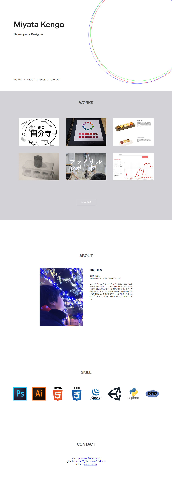

６,７期 グラフィックインフォメーション 授業課題
ポートフォリオサイト（このサイト）
宮田健吾の集大成
ポートフォリオサイトを制作するにあたって何を見てほしいか、ユーザーは何が見たいかを意識してその最大公約数でデザインしました。具体的には「あなたの名前は？」「何作ってるの？」「どんな人なの？」「何ができるの？」という４つに絞りました。この４つの要素は全て縦長のトップページに収めました。作品は全ては収まりきらないのでトップページではランダムな作品を２列に収まる数だけ表示するようにjqueryで制御しています。作品一覧のページはshuffle.jsというライブラリを使って実装しました。作品ジャンルごとでフィルタリングできて便利です。
URL index.html
制作ソフト Adobe Illustrator sublimetext
使用技術 html5 css3 jquery easing shuffle.js ajax svg
製作期間 デザイン２週間 コーディング３日
関連する作品